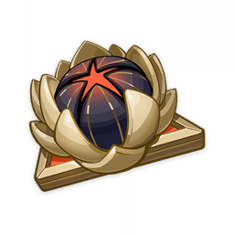
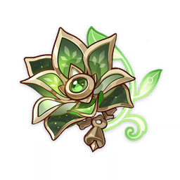

Alhaitham is one of the newly added characters in the 3.4 Genshin Impact update, wielding a sword along with the Dendro Vision. Alhaitham is a member of the Haravatat of the Sumeru Akademiya and the Akademiya's Scribe, responsible for documenting their findings and drafting ordinances. The current scribe of the Sumeru Akademiya. This title may sound very impressive, but it's really because the Akademiya has a culture of using official titles to inflate one's ego. He is a capable person who keeps a low profile for too long is often perceived as someone with a mysterious identity and ulterior purposes. Alhaitham himself is a powerful rebuttal to all these cliché views: He is a brilliant man, but he is only an ordinary employee of the Akademiya, with a stable job and a cushy house in Sumeru, leading a carefree and comfortable life.
For the artifact set, it is highly recommended that you go for either Gilded Dreams or Deepwood Memories
 As for the weapon choices, the most obvious choice would be to go fot 5 star weapons, though there are some good exceptions for 4 star weapons for all of you who don't pull on the weapon banner. The most obvious "F2P" option would be an Iron Sting R5 so here are some performance comparisons with the Iron Sting R5 as the base reference.
---------------------------------------------------------
| Weapon | % of Iron Sting R5 |
---------------------------------------------------------
| Light of Follar Sanction R1 | 128.3% |
| Primordial Jade Cutter R1 | 119.7% |
| Missplitter Reforged R1 | 115.5% |
| Haran Geppaku Futsu R1 | 113.4% |
| Freedom-Sworn R1 | 105.9% |
| Toukabou Shigure R5 | 102.8% |
| The Black Sword R5 | 101.4% |
| Xiphos' Moonlight R5/R1 | 100.5% |
| Summit Shaper (Shielded) R1 | 100.1% |
| The Black Sword R1 | 100.1% |
| Iron Sting R5 | 100.0% |
| Iron Sting R1 | 95.8% |
---------------------------------------------------------